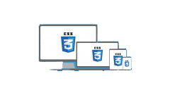

Introducción
Pagina Web
Una página web, o página electrónica, página digital, o ciberpágina1 2 es un documento o información electrónica capaz de contener texto, sonido, vídeo, programas, enlaces, imágenes, y muchas otras cosas, adaptada para la llamada World Wide Web (WWW) y que puede ser accedida mediante un navegador web. Esta información se encuentra generalmente en formato HTML o XHTML, y puede proporcionar acceso a otras páginas web mediante enlaces de hipertexto. Frecuentemente también incluyen otros recursos como pueden ser hojas de estilo en cascada, guiones (scripts), imágenes digitales, entre otros.
Las páginas web pueden estar almacenadas en un equipo local o en un servidor web remoto. El servidor web puede restringir el acceso únicamente a redes privadas, por ejemplo, en una intranet corporativa, o puede publicar las páginas en la World Wide Web. El acceso a las páginas web es realizado mediante una transferencia desde servidores, utilizando el protocolo de transferencia de hipertexto (HTTP).
HTML5
HTML5 es un lenguaje markup (de hecho, las siglas de HTML significan Hyper Text Markup Language) usado para estructurar y presentar el contenido para la web. Es uno de los aspectos fundamentales para el funcionamiento de los sitios, pero no es el primero. Es de hecho la quinta revisión del estándar que fue creado en 1990. A fines del año pasado, la W3C la recomendó para transformarse en el estándar a ser usado en el desarrollo de proyectos venideros. Por así decirlo, qué es HTML5 está relacionado también con la entrada en decadencia del viejo estándar HTML 4, que se combinaba con otros lenguajes para producir los sitios que podemos ver hoy en día. Con HTML5, tenemos otras posibilidades para explotar usando menos recursos. Con HTML5, también entra en desuso el formato XHTML, dado que ya no sería necesaria su implementación.

CSS y CSS3
CSS es un lenguaje de hojas de estilos creado para controlar el aspecto o presentación de los documentos electrónicos definidos con HTML y XHTML. CSS es la mejor forma de separar los contenidos y su presentación y es imprescindible para crear páginas web complejas. Separar la definición de los contenidos y la definición de su aspecto presenta numerosas ventajas, ya que obliga a crear documentos HTML/XHTML bien definidos y con significado completo (también llamados "documentos semánticos"). Además, mejora la accesibilidad del documento, reduce la complejidad de su mantenimiento y permite visualizar el mismo documento en infinidad de dispositivos diferentes.



 1
1 3
3 4
4 5
5 6
6